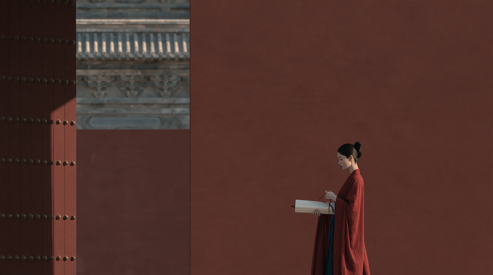
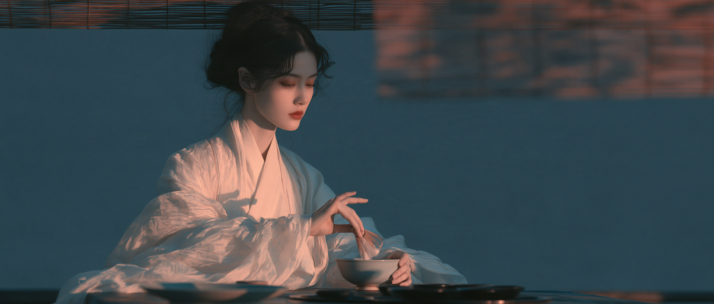
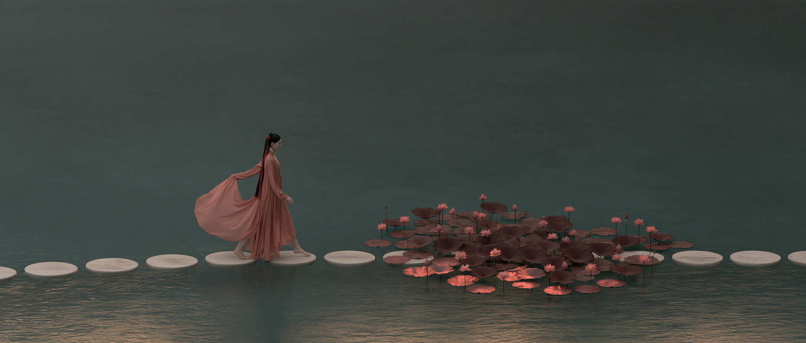
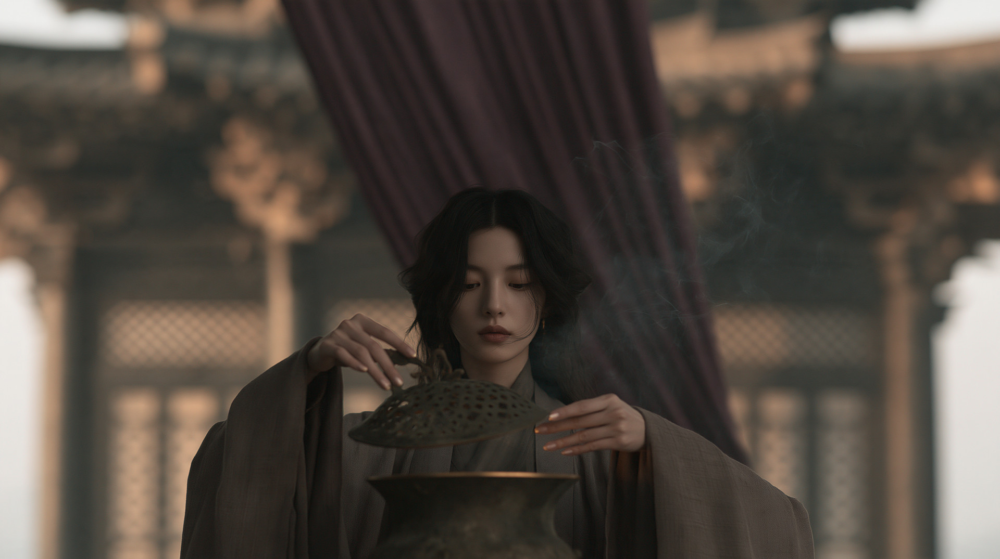
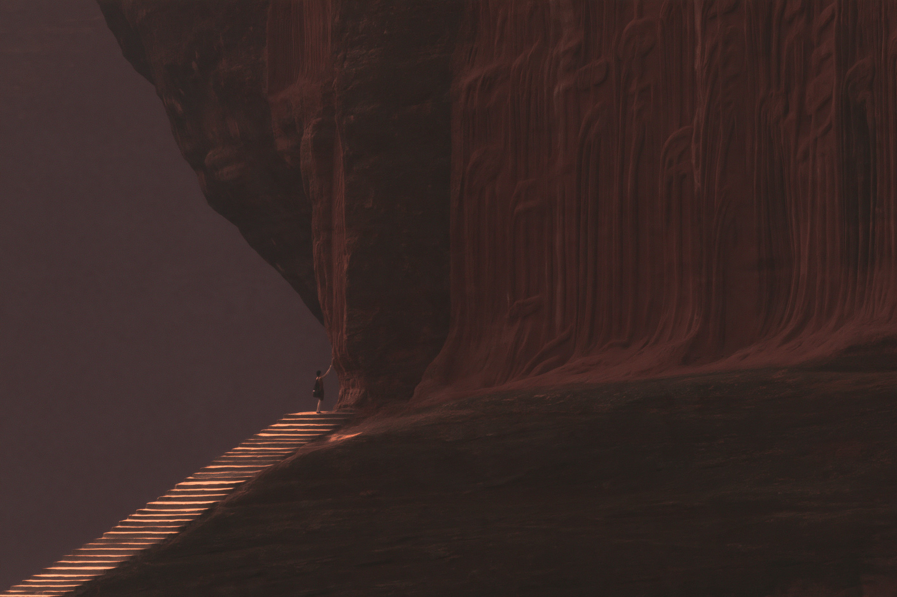
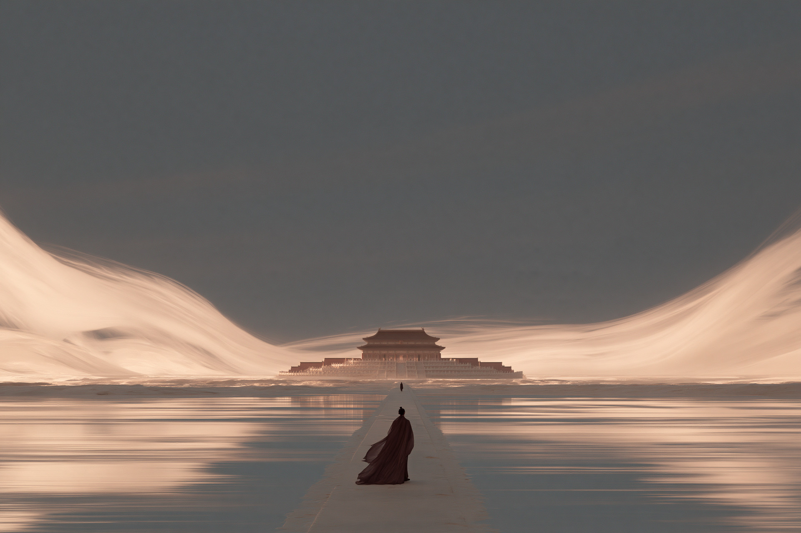
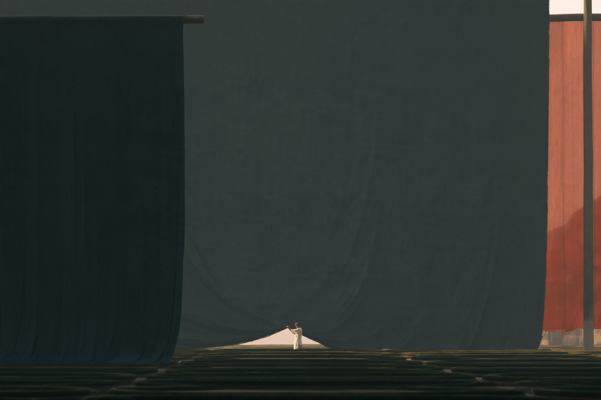

MJ WHITE · 中式有色留白01 / 06
MJWHITE
留白，
不止于白。
让浓烈的色彩留出呼吸，
让光影写下尚未说完的故事。
画面编译的四个锚点色域 → 空间 → 视觉事件 → 物理反馈
一套可复用的画面方法THE ART OF COLORED SPACE
MJ WHITE · COLOR02 / 06
留白不是白色背景，而是让一片有颜色的区域，承接画面的呼吸与节奏。

朱红 · 墙面建筑留白

靛蓝 · 暗部暖光聚焦

墨绿 · 水面路径节奏

暖褐 · 帘幕前后层次
主色有载体，光线有来处；
信息有疏密，画面才会呼吸。
人物场景 · 四种主导色域MJ WHITE
MJ WHITE · HUMAN SCENES03 / 06
THE IN-BETWEEN MOMENT
让动作，
留在发生之间。
GAZE / TOUCH / RESULT
目光落向何处？
手触碰什么？
结果如何显现？
视线→器物→动作→反馈
CASE STUDY 01 · 香炉开合 / 暖光点茶
不让人物只是站在那里；
让光、烟与手势共同讲述一刻。
人物场景分支MJ WHITE
MJ WHITE · MONUMENTAL SPACE04 / 06
SCALE IS A RELATIONSHIP
巨大，
来自关系。
一点人影、一段阶梯、一处画外延伸，让“巨大”被真正看见。

赤褐 · 巨壁与阶梯深蓝 · 路径与远殿东方巨构分支MJ WHITE
MJ WHITE · COMPOSITION05 / 06
COMPOSITION FIRST
先构图，
再写形容词。
让相机的位置、空间的几何和观看路径，先于“唯美”“空灵”“震撼”。
斜向阶梯 · 视线被引向接触点

弧面收束 · 远处建筑成为终点
01 先定镜位02 识别低信息面03 安排视觉转折点
真正的变化不是换一个颜色名，
而是换一种观看世界的方式。
画面编译方法MJ WHITE
MJ WHITE · WORKFLOW06 / 06
FROM IDEA TO IMAGE
把审美，
变成可复用的方法。
从一句想法开始，让画面有结构、有色域、有行动，也有纠偏的方向。
01描述想法主题 · 情绪 · 用途
02选择分支人物场景 / 东方巨构
03锚定画面构图 · 色域 · 视觉事件
04输出提示词完整、可复制的英文 MJ prompt
05针对性纠偏只修最早失效的关系

$mj-white-skill · 以色留白，以景叙事
一套提示词方法 · 两个画面分支MJ WHITE